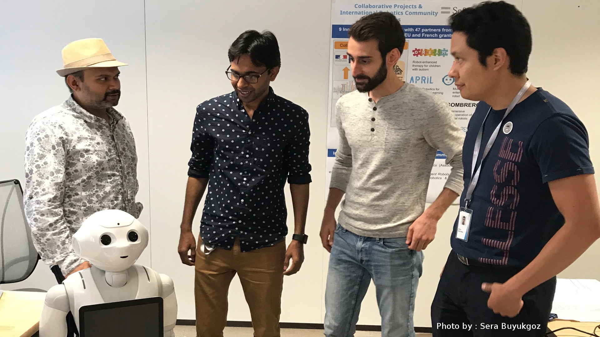
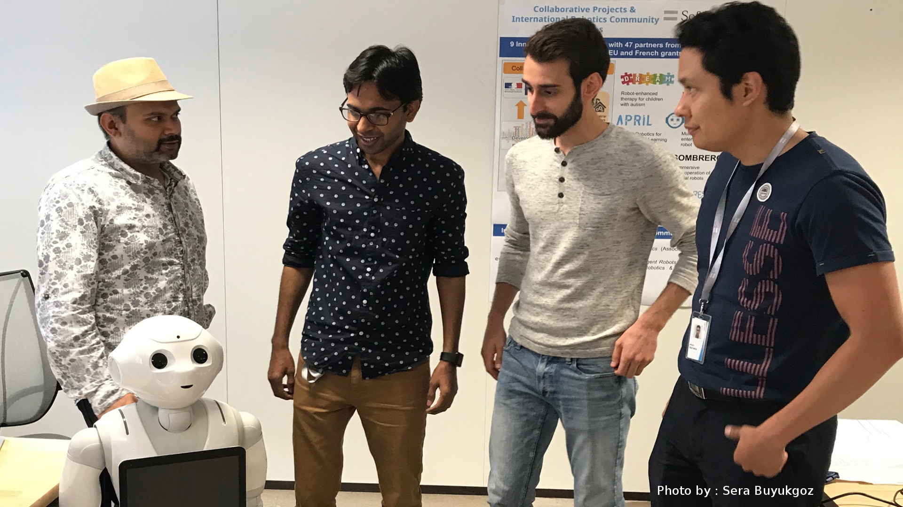
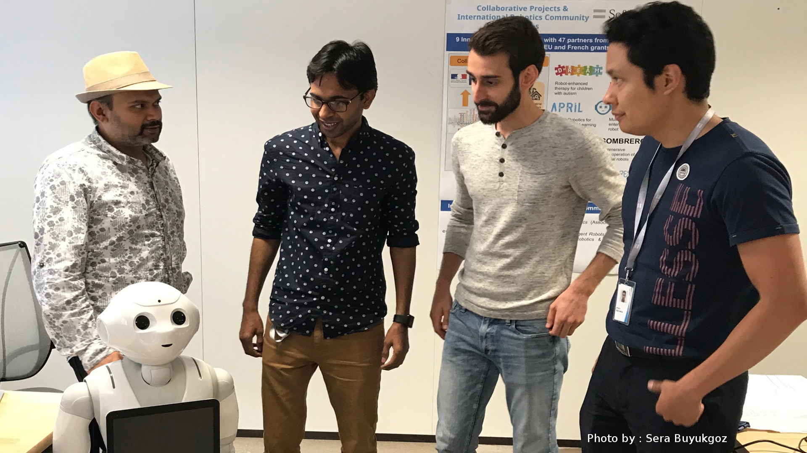

| Polite Dialogue | Impolite Dialogue |
| ---------- dialogue.log_on_14_08_18_at_15_50_07 ---------- -<>- turn : 1 ---- in_utt : "hello how are you?" -->INPUT_UTT == 1 x--- in_slu : ('Greeting', 1.0, {}) x--- in_dop : 1 accumulative DoP : 1 ---> op_utt : Hello, I am fine, thanks, how can I help you? -<>- turn : 2 ---- in_utt : "could you please show me the education" -->INPUT_UTT == 2 x--- in_slu : ('TakeToPlace', 1.0, {'slot_value': ['room', 'education']}) x--- in_dop : 1 accumulative DoP : 2 ---> op_utt : Please follow me, I can show you the education -<>- turn : 3 ---- in_utt : could you please show me the education ---NOT_INPUT x--- in_slu : ('FinishedOne', 1.0, {'slot_value': ['room', 'education']}) x--- in_dop : 0 accumulative DoP : 2 ---> op_utt : We arrived at education department, here you can find the education related stuff. Would you like to visit next department? -<>- turn : 4 ---- in_utt : "yes I would like to visit" -->INPUT_UTT == 3 x--- in_slu : ('Accept', 0.5653610591806222, {}) x--- in_dop : 1 accumulative DoP : 3 ---> op_utt : Okay lets go to the next department. -<>- turn : 5 ---- in_utt : yes I would like to visit ---NOT_INPUT x--- in_slu : ('TakeToPlace', 1.0, {'slot_value': ['room', 'tourism']}) x--- in_dop : 0 accumulative DoP : 3 ---> op_utt : Please follow me, I can take you to the tourism -<>- turn : 6 ---- in_utt : yes I would like to visit ---NOT_INPUT x--- in_slu : ('FinishedOne', 1.0, {'slot_value': ['room', 'tourism']}) x--- in_dop : 0 accumulative DoP : 3 ---> op_utt : We arrived at tourism department, here you can find the tourism related stuff. Would you like to visit next department? -<>- turn : 7 ---- in_utt : "no thank you" -->INPUT_UTT == 4 x--- in_slu : ('Thanking', 1.0, {}) x--- in_dop : 0 accumulative DoP : 3 ---> op_utt : You are welcome, thanks for bearing with me. | ---------- dialogue.log_on_14_08_18_at_16_24_24 ---------- -<>- turn : 1 ---- in_utt : "hello" -->INPUT_UTT == 1 x--- in_slu : ('Greeting', 1.0, {}) x--- in_dop : 0 accumulative DoP : 0 ---> op_utt : Hello, how can I help you? -<>- turn : 2 ---- in_utt : "show me education department" -->INPUT_UTT == 2 x--- in_slu : ('TakeToPlace', 1.0, {'slot_value': ['room', 'education']}) x--- in_dop : -1 accumulative DoP : -1 ---> op_utt : Please follow me. -<>- turn : 3 ---- in_utt : show me education department ---NOT_INPUT x--- in_slu : ('FinishedOne', 1.0, {'slot_value': ['room', 'education']}) x--- in_dop : 0 accumulative DoP : -1 ---> op_utt : Here is the education department, here you can find the stuff related to education. Do you wish to visit next department? -<>- turn : 4 ---- in_utt : "show me the tourism" -->INPUT_UTT == 3 x--- in_slu : ('TakeToPlace', 1.0, {'slot_value': ['room', 'tourism']}) x--- in_dop : -1 accumulative DoP : -2 ---> op_utt : Please follow me. -<>- turn : 5 ---- in_utt : show me the tourism ---NOT_INPUT x--- in_slu : ('FinishedOne', 1.0, {'slot_value': ['room', 'tourism']}) x--- in_dop : 0 accumulative DoP : -2 ---> op_utt : We arrived at tourism department, here you can find the tourism related stuff. Would you like to visit next department? -<>- turn : 6 ---- in_utt : "no" -->INPUT_UTT == 4 x--- in_slu : ('Reject', 1.0, {}) x--- in_dop : -1 accumulative DoP : -3 ---> op_utt : Okay. -<>- turn : 7 ---- in_utt : "bye" -->INPUT_UTT == 5 x--- in_slu : ('ConvClosing', 1.0, {}) x--- in_dop : 0 accumulative DoP : -3 ---> op_utt : Bye bye, have a nice day. |

SECURE Secondment Project by Chandrakant Bothe
Towards Dialogue-based Navigation with Multivariate Adaptation based on Intention and Politeness for Social Robots
The secondment is accomplished with extensive experiment during July-August '18 in collaboration with the industrial partner SoftBank Robotics in Paris, France with their semi-humanoid robot Pepper.
Any further deatails/updates/news about this project will be posted on this page.